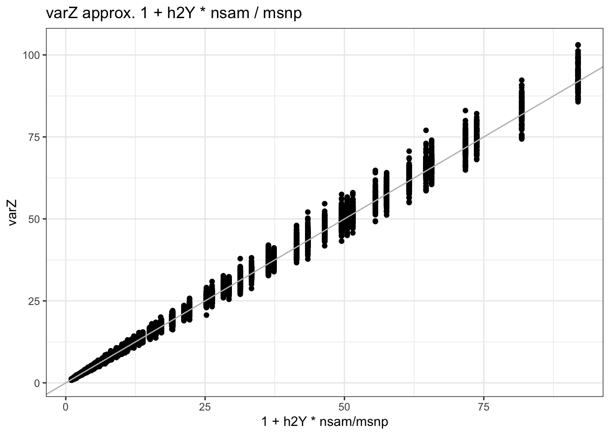

suppressMessages(library(tidyverse))
suppressMessages(library(glue))
PRE = "/Users/haekyungim/Library/CloudStorage/Box-Box/LargeFiles/imlab-data/data-Github/web-data"
SLUG="inflation-brainxcan-II" ## copy the slug from the header
bDATE='2023-08-23' ## copy the date from the blog's header here
DATA = glue("{PRE}/{bDATE}-{SLUG}")
if(!file.exists(DATA)) system(glue::glue("mkdir {DATA}"))
WORK=DATA
##system(glue("open {DATA}")) ## this will open the folder Polygenicity Driven Inflation in Brainxcan II
analysis
to investigate the functional form of var(Z_TWAS)(N, h_Y, M)
Investigate this expression \(\text{Var}(Z_\text{bxcan}) = 1 + h_Y^2 \cdot N \cdot \Phi(\cdots)\)
How does \(\Phi\) relate to the traces expression? \[\Phi \longleftrightarrow \frac{\text{tr}(R'R)}{\text{tr}^2(R)}\] The model for Y and IDPs
\[Y = T ~ \beta + X \cdot b + \epsilon_Y\] \[T = X \cdot \gamma\] Error in prediction will be introduced as error in \(\gamma\) later
copied simulation code from previous post on polygenicity driven inflation in brainxcan
load and define Functions
suppressMessages(devtools::source_gist("115403f16bec0a0e871f3616d552ce9b") ) ## load fn_ratxcan, fast regression and other convenience functions to correlate subsets of columns of two matrices
suppressMessages(devtools::source_gist("38431b74c6c0bf90c12f") ) ## load qqunif
my_trace = function(mat) if(nrow(mat)==ncol(mat)) sum(diag(mat)) else error("matrix is not diagonal")
qqR2 <- function(corvec,nn,pad_neg_with_0 = FALSE,...)
{
## nn is the sample size, number of individuals used to compute correlation.
## needs correlation vector as input.
## nullcorvec generates a random sample from correlation distributions, under the null hypothesis of 0 correlation using Fisher's approximation.
if(pad_neg_with_0) corvec[corvec < 0 | is.na(corvec) ]=0
mm <- length(corvec)
nullcorvec = tanh(rnorm(mm)/sqrt(nn-3)) ## null correlation vector
qqplot(nullcorvec^2,corvec^2,...); abline(0,1); grid()
}
qqR <- function(corvec,nn,...)
{
## nn is the sample size, number of individuals used to compute correlation.
## needs correlation vector as input.
## nullcorvec generates a random sample from correlation distributions, under the null hypothesis of 0 correlation using Fisher's approximation.
mm <- length(corvec)
nullcorvec = tanh(rnorm(mm)/sqrt(nn-3)) ## null correlation vector
qqplot(nullcorvec,corvec,...); abline(0,1); grid()
}
## calculate p-value from correlation
cor2zscore = function(cc,nn)
{
zz = atanh(cc) * sqrt(nn-3)
}
cor2pval = function(cc,nn)
{
zz=cor2zscore(cc,nn)
pnorm(-abs(zz))*2
}
cor2chi2 = function(cc,nn)
{
cor2zscore(cc,nn)^2
}simulate_study = function(nsam,msnp,nsim,midp,precision_gamma,h2Y,prop_causal)
{
## simulate Xmat (nsam x msnp)
Xmat = matrix(rbinom(nsam*msnp, 2, 0.4), nsam, msnp)
## calculate GRM or LD matrix depending on min(nsam, msnp) and trrtr
R = scale(Xmat) ## QUESTION: DO I NEED TO SCALE ACROSS SAMPLES AND ACROSS SNPS?
if(nsam > msnp)
{
R = t(R)
MM = nsam
} else MM = msnp
R = ( R %*% t(R) ) / MM
trrtr = my_trace( t(R) %*% R ) / my_trace(R)^2
## simulate IDPmat (nsam x mipd)
gammamat = matrix(rnorm(msnp * midp),msnp, midp)
is_causal = rbinom(msnp,1,prop_causal)
gammamat = sweep(gammamat,MARGIN=1,is_causal,FUN="*")
gIDPmat = Xmat %*% gammamat
gIDPmat = scale(gIDPmat)
gIDPmat = sweep(gIDPmat, MARGIN=2, sqrt(precision_gamma), FUN="*" )
egammamat = matrix(rnorm(msnp * midp),msnp, midp)
eIDPmat = Xmat %*% egammamat
eIDPmat = scale(eIDPmat)
eIDPmat = sweep(eIDPmat, MARGIN=2, sqrt(1 - precision_gamma), FUN="*" )
IDPmat = gIDPmat + eIDPmat
## simulate Ymat (nsam x nsim) indep of IDPs
betamat = matrix(rnorm(msnp*nsim),msnp, nsim)
epsimat = matrix(rnorm(nsam*nsim),nsam, nsim)
epsimat = scale(epsimat) * sqrt(1 - h2Y)
gYmat = Xmat %*% betamat
gYmat = scale(gYmat) * sqrt(h2Y)
Ymat = gYmat + epsimat
## calc cor
## scale Ymat & IDPmat
Ymat = scale(Ymat)
IDPmat = scale(IDPmat)
## multiply t(Ymat) %*% IDPmat
cormat = t(Ymat) %*% IDPmat
cormat = cormat / nsam
## calc varZ
chi2mat = cor2chi2(cormat,nn=nsam)
varZ = apply(chi2mat,2,mean)
## build result list
res = list()
res$varZ = varZ
res$trrtr = trrtr
res
}define parameters for simulation multiple comb of nsam and msnp
nsim = 1000
midp = 99
precision_gamma = 0.1 + 0.8 * (1:midp)/midp
h2Yvec = (1:9)/10; num_h2Y = length(h2Yvec)
nsamlist = c(100,1000,2000,3000,5000,6000,7000,8000,10000); num_nsam=length(nsamlist)
msnplist = c(99,499,999,1999, 2999,3999,4999); num_msnp=length(msnplist)
prop_causal=1simulate and plot varZ vs precision_gamma by h2Y, msnp, nsam
rerun=FALSE
if(rerun)
{
varZarray = array(NA, dim=c(num_h2Y,num_nsam, num_msnp, midp))
trrtrarray = array(NA,dim=c(num_h2Y,num_nsam, num_msnp))
for(hh in 1:num_h2Y)
{
h2Y = h2Yvec[hh]
print("---------------")
print("h2Y is")
print(h2Y)
# varZmat = array(NA, dim=c(num_nsam, num_msnp, midp) )
# trrtrarray = matrix(NA,num_nsam, num_msnp)
for(ii in 1:num_nsam)
{
for(jj in 1:num_msnp)
{
res=list()
#print(ii)
#print(jj)
nsam=nsamlist[ii]
msnp=msnplist[jj]
#print(nsam)
#print(msnp)
noskip = !(msnp==4999 & nsam > 4999)
if(noskip)
{
res = simulate_study(nsam,msnp,nsim,midp,precision_gamma,h2Y,prop_causal)
varZarray[hh,ii,jj,] = res$varZ
trrtrarray[hh,ii,jj] = res$trrtr
}
}
}
# saveRDS(varZmat,glue("{DATA}/varZmat-h2Y{h2Y}-propcausal{prop_causal}.RDS"))
# saveRDS(trrtrmat,glue("{DATA}/trrtrmat-h2Y{h2Y}-propcausal{prop_causal}.RDS"))
charnsamlist = paste0("n_",nsamlist)
charmsnplist = paste0("m_",msnplist)
charh2vec = paste0("h2Y_",h2Yvec)
dimnames(trrtrarray) = list(charh2vec, charnsamlist,charmsnplist)
dimnames(varZarray) = list(charh2vec, charnsamlist,charmsnplist,
paste0("prec_",round(precision_gamma,4)))
saveRDS(varZarray,glue("{DATA}/varZarray-propcausal{prop_causal}.RDS"))
saveRDS(trrtrarray,glue("{DATA}/trrtrarray-propcausal{prop_causal}.RDS"))
}
charnsamlist = paste0("n_",nsamlist)
charmsnplist = paste0("m_",msnplist)
charh2vec = paste0("h2Y_",h2Yvec)
dimnames(trrtrarray) = list(charh2vec, charnsamlist,charmsnplist)
dimnames(varZarray) = list(charh2vec, charnsamlist,charmsnplist,
paste0("prec_",round(precision_gamma,4)))
saveRDS(varZarray,glue("{DATA}/varZarray-propcausal{prop_causal}.RDS"))
saveRDS(trrtrarray,glue("{DATA}/trrtrarray-propcausal{prop_causal}.RDS"))
} else
{
# varZarray = readRDS(glue("{DATA}/varZarray-propcausal{prop_causal}.RDS"))
# trrtrarray = readRDS(glue("{DATA}/trrtrarray-propcausal{prop_causal}.RDS"))
varZarray = readRDS(glue("{DATA}/saved-varZarray-nsim-1000-propcausal1.RDS"))
trrtrarray = readRDS(glue("{DATA}/saved-trrtrarray-nsim-1000-propcausal1.RDS"))
}varZdf = reshape2::melt(varZarray)
varZdf$Var1 = as.character(varZdf$Var1)
varZdf$Var2 = as.character(varZdf$Var2)
varZdf$Var3 = as.character(varZdf$Var3)
varZdf$Var4 = as.character(varZdf$Var4)
## check random subset that the melted df has the same values as the array
rrlist = sample(1:nrow(varZdf),1000)
for(rr in rrlist)
{
if(!is.na(varZdf$value[rr]))
{char_h2Y = varZdf$Var1[rr]
char_nsam = varZdf$Var2[rr]
char_msnp = varZdf$Var3[rr]
char_prec = varZdf$Var4[rr]
if( varZdf$value[rr]!= varZarray[char_h2Y,char_nsam,char_msnp,char_prec]
)
{print('Error in row ');print(rr)}
}
}
## extract numbers from the names of dim array
varZdf =
varZdf %>%
mutate(
h2Y = as.numeric(str_extract(Var1, "(?<=h2Y_)[\\d\\.]+")),
nsam = as.numeric(str_extract(Var2, "(?<=n_)[\\d\\.]+")),
msnp = as.numeric(str_extract(Var3, "(?<=m_)[\\d\\.]+")),
prec = as.numeric(str_extract(Var4, "(?<=prec_)[\\d\\.]+"))
) %>% rename(varZ = value)
## remove missing
print(dim(varZdf))[1] 56133 9varZdf = na.omit(varZdf)
print(dim(varZdf))[1] 51678 9TRdf = reshape2::melt(trrtrarray)
TRdf$Var1 = as.character(TRdf$Var1)
TRdf$Var2 = as.character(TRdf$Var2)
TRdf$Var3 = as.character(TRdf$Var3)
TRdf =
TRdf %>%
mutate(
h2Y = as.numeric(str_extract(Var1, "(?<=h2Y_)[\\d\\.]+")),
nsam = as.numeric(str_extract(Var2, "(?<=n_)[\\d\\.]+")),
msnp = as.numeric(str_extract(Var3, "(?<=m_)[\\d\\.]+")),
) %>% rename(trrtr = value)
## remove missing
print(dim(TRdf))[1] 567 7TRdf = na.omit(TRdf)
print(dim(TRdf))[1] 522 7TRdf %>% ggplot(aes(nsam,(trrtr - 1/msnp)*nsam)) + geom_point() + geom_hline(yintercept=1,col='gray') + ggtitle( "( trrtr - 1/M )*nsam" )
##Numeric "experiments" indicate that trrtr \approx 1/N + 1/M
with(TRdf, summary(lm( trrtr ~ I(1/msnp) + I(1/nsam) ) ) )
Call:
lm(formula = trrtr ~ I(1/msnp) + I(1/nsam))
Residuals:
Min 1Q Median 3Q Max
-3.000e-04 -2.480e-06 -6.300e-07 1.640e-06 3.264e-04
Coefficients:
Estimate Std. Error t value Pr(>|t|)
(Intercept) 8.262e-08 1.518e-06 0.054 0.957
I(1/msnp) 9.985e-01 3.440e-04 2902.829 <2e-16 ***
I(1/nsam) 1.008e+00 3.735e-04 2699.414 <2e-16 ***
---
Signif. codes: 0 '***' 0.001 '**' 0.01 '*' 0.05 '.' 0.1 ' ' 1
Residual standard error: 2.696e-05 on 519 degrees of freedom
Multiple R-squared: 1, Adjusted R-squared: 1
F-statistic: 7.703e+06 on 2 and 519 DF, p-value: < 2.2e-16with(TRdf, plot(1/msnp + 1/nsam,trrtr ) )
abline(0,1)
TRdf %>% ggplot(aes(1/msnp + 1/nsam,trrtr ,col=Var3) ) + geom_point() + geom_abline() + ggtitle("trrtr = 1/M + 1/N") + theme_bw()
TRdf %>% ggplot(aes(1/msnp + 1/nsam,trrtr ,col=Var2) ) + geom_point() + geom_abline() + ggtitle("trrtr = 1/M + 1/N") + theme_bw()
## compare varZ with 1 + h2 N / M
with(varZdf, summary(lm( varZ ~ I(1 + h2Y * nsam / msnp) ) ) )
Call:
lm(formula = varZ ~ I(1 + h2Y * nsam/msnp))
Residuals:
Min 1Q Median 3Q Max
-8.4220 -0.0652 0.0101 0.0791 11.5993
Coefficients:
Estimate Std. Error t value Pr(>|t|)
(Intercept) -0.0403504 0.0031788 -12.69 <2e-16 ***
I(1 + h2Y * nsam/msnp) 1.0125590 0.0002367 4277.43 <2e-16 ***
---
Signif. codes: 0 '***' 0.001 '**' 0.01 '*' 0.05 '.' 0.1 ' ' 1
Residual standard error: 0.6421 on 51676 degrees of freedom
Multiple R-squared: 0.9972, Adjusted R-squared: 0.9972
F-statistic: 1.83e+07 on 1 and 51676 DF, p-value: < 2.2e-16varZdf %>%
ggplot(aes(x = 1 + h2Y * nsam / msnp, y = varZ)) +
geom_point() +
geom_abline(intercept = 0, slope = 1, color = "gray") +
theme_bw() +
ggtitle("varZ approx. 1 + h2Y * nsam / msnp")
other plots
varZdf %>%
filter(nsam > 999) %>%
ggplot(aes(x = Var1, y = (varZ - 1) / h2Y / nsam * msnp)) +
geom_boxplot() +
geom_hline(yintercept = 1, color = 'gray', linetype = 3) +
labs(title = "(varZ - 1)*M/N/h2Y vs h2Y", x = "h2Y") 
varZdf %>%
filter(nsam > 999) %>%
ggplot(aes(x = prec, y = (varZ - 1) / h2Y / nsam * msnp)) +
geom_point() + geom_smooth() +
geom_hline(yintercept = 1, color = 'gray', linetype = 3) +
labs(title = "(varZ - 1)*M/N/h2Y vs h2Y") `geom_smooth()` using method = 'gam' and formula = 'y ~ s(x, bs = "cs")'
for(nn in nsamlist)
{
pp <- varZdf %>%
filter(nsam == nn) %>%
ggplot(aes(x = prec, y = (varZ - 1) / h2Y / nsam * msnp)) +
geom_point() + geom_smooth() +
geom_hline(yintercept = 1, color = 'green') +
labs(title = glue("(varZ - 1)*M/N/h2Y vs h2Y - nsam={nn}" ) )+
theme(legend.position = "none")
print(pp)
}`geom_smooth()` using method = 'gam' and formula = 'y ~ s(x, bs = "cs")'
`geom_smooth()` using method = 'gam' and formula = 'y ~ s(x, bs = "cs")'
`geom_smooth()` using method = 'gam' and formula = 'y ~ s(x, bs = "cs")'
`geom_smooth()` using method = 'gam' and formula = 'y ~ s(x, bs = "cs")'
`geom_smooth()` using method = 'gam' and formula = 'y ~ s(x, bs = "cs")'
`geom_smooth()` using method = 'gam' and formula = 'y ~ s(x, bs = "cs")'
`geom_smooth()` using method = 'gam' and formula = 'y ~ s(x, bs = "cs")'
`geom_smooth()` using method = 'gam' and formula = 'y ~ s(x, bs = "cs")'
`geom_smooth()` using method = 'gam' and formula = 'y ~ s(x, bs = "cs")'
varZdf %>%
filter(nsam >= 1000) %>%
mutate(phi=(varZ - 1)/h2Y/nsam*msnp ) %>%
group_by(h2Y,nsam,msnp) %>%
summarize(mean=mean(phi),sd=sd(phi),median=median(phi), .groups = "drop" ) %>%
ggplot(aes(h2Y, mean,col=as.factor(nsam))) +
geom_point() +
labs(title = "mean (varZ - 1)*M/N/h2Y vs h2Y") 
varZdf %>%
filter(nsam >= 1000) %>%
mutate(phi=(varZ - 1)/h2Y/nsam*msnp ) %>%
group_by(h2Y,nsam,msnp) %>%
summarize(mean=mean(phi),sd=sd(phi),median=median(phi), .groups = "drop" ) %>%
ggplot(aes(nsam, mean,col=as.factor(msnp))) +
geom_point() +
labs(title = "mean (varZ - 1)*M/N/h2Y vs nsam") 
varZdf %>%
filter(nsam >= 1000) %>%
mutate(phi=(varZ - 1)/h2Y/nsam*msnp ) %>%
group_by(h2Y,nsam,msnp) %>%
summarize(mean=mean(phi),sd=sd(phi),median=median(phi), .groups = "drop" ) %>%
ggplot(aes(msnp, mean,col=as.factor(nsam))) +
geom_point() +
labs(title = "mean (varZ - 1)*M/N/h2Y vs msnp")